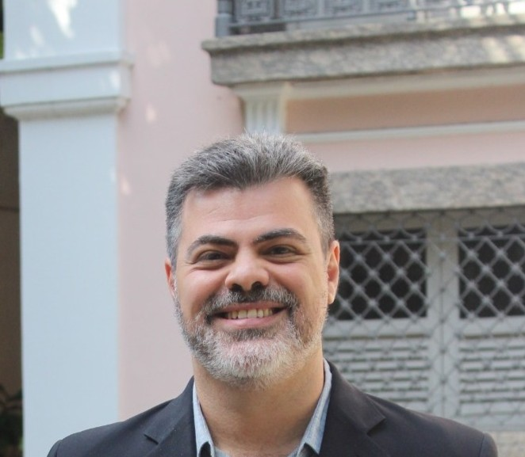
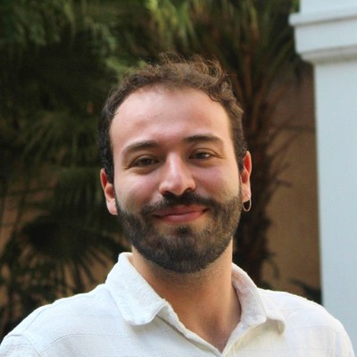

Pesquisa crítica sobre política global, cooperação internacional e a perspectiva do Sul Global — desde a UNIRIO para o mundo.
O GRISUL é um grupo de pesquisa certificado pelo CNPq, criado em 2014 na Escola de Ciência Política da UNIRIO. Nosso trabalho parte de uma perspectiva crítica e situada no Sul Global para compreender as dinâmicas das relações internacionais contemporâneas.
Desenvolvemos pesquisas sobre política global, cooperação internacional e política externa com um compromisso epistemológico com vozes e experiências historicamente marginalizadas no campo da Ciência Política e das Relações Internacionais.
Universidade Federal do Estado do Rio de Janeiro
Escola de Ciência Política
Prof. Dr. André Luiz Coelho Farias de Souza
Profa. Dra. Roberta Rodrigues Marques da Silva
Lucas Calabró Berti
Ciência Política · Relações Internacionais
Estudo das relações exteriores dos países latino-americanos, integração regional e inserção internacional a partir de perspectivas críticas e decoloniais.
Investigação sobre a formulação e implementação da política externa do Brasil, seus atores institucionais e domésticos e suas articulações internacionais.
Análise das dinâmicas de transição energética e dos impactos das mudanças climáticas sob a ótica dos países do Sul Global, com ênfase em justiça climática e soberania energética.
Investigação das estruturas econômicas globais, fluxos de capital, comércio internacional e suas implicações para os países do Sul Global e para o desenvolvimento.


As publicações do grupo serão listadas aqui em breve.
Para consultar a produção bibliográfica completa, acesse o espelho do grupo no CNPq.